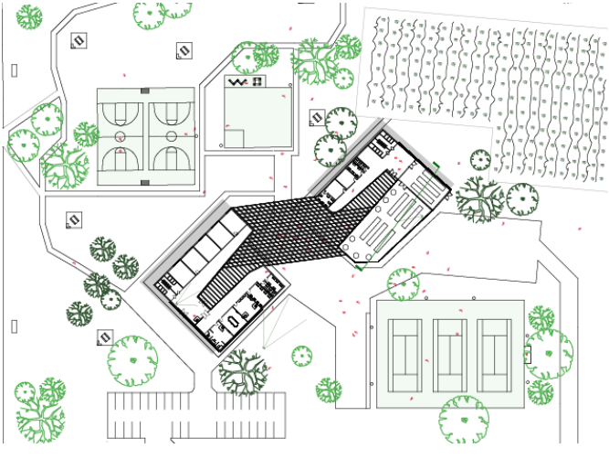

Third Year
"We should attempt to bring nature, houses, and human beings together in a higher unity."
LUDWIG MIES VAN DER ROHE
Frank Tejeda Park is the location of the design. After visiting the park there was a realization of the need for shading, and a place where visitors can congregate together. For the design concept there are two main ideas; shaded gathering space and the seperation of the appropriate functions necessary for the building. The design accomplishes both of these desired components by having two seperate masses (seperated by program) that form a third exterior shaded central gathering space. The roofs for the building are at a slope allowing for rain to run down and there are opening courtyards in the middle of the building that lead to the primary covered exterior space.
CENTER FOR NEIGHBORHOOD RESILIENCE
